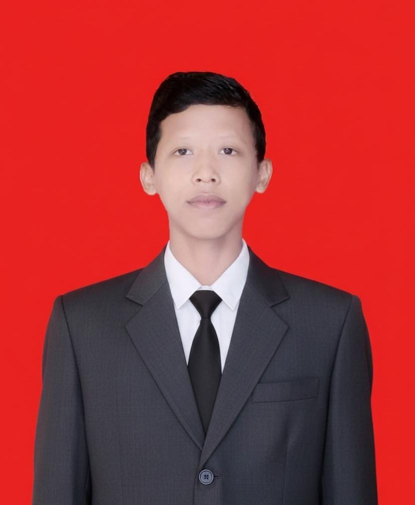

SMK NEGERI 1 KANDEMAN
Halo semuannya saya Akmal Ridho Maulana saya Seorang Siswa SMK Negeri 1 Kademan Aplilikasi ini saya buat sebagai tugas projek akhir Semester 2 ini dan semoga aplikasi yang saya buat ini dapat membantu ya